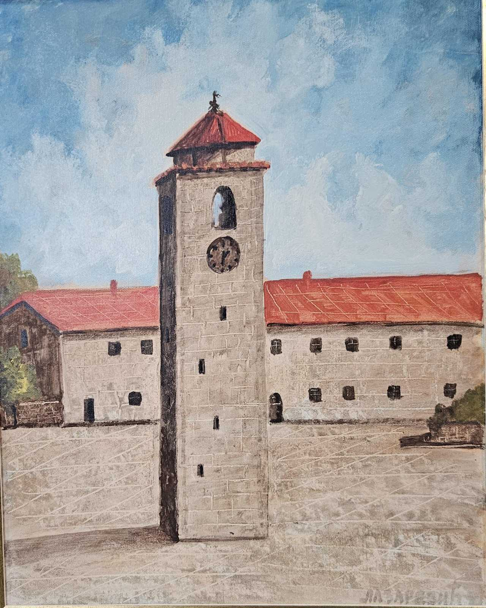
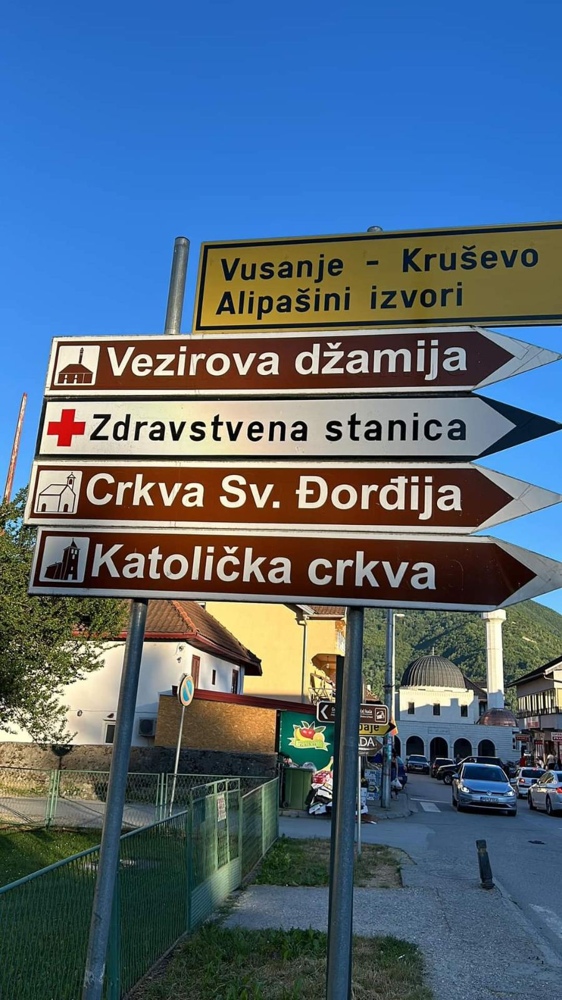

Islamski vjerski objekti na teritoriji Crne Gore kao turistička ponuda
Crna Gora je zemlja bogate kulturne baštine, u kojoj se stapaju različiti vjerski i kulturni uticaji, a među njima i islamski. Islam je u Crnu Goru stigao u 15. vijeku, tokom osmanske vladavine, koja je trajala sve do kraja 19. veka. Danas, muslimani čine značajan dio crnogorskog društva, a islamska kulturna baština predstavlja važan segment turističke ponude zemlje. Islamski vjerski objekti na teritoriji Crne Gore, kao što su džamije, mektebi, musafirhane i turbeta, ne samo da imaju vjerski značaj, već i istorijski i kulturni, te mogu privući posjetioce iz zemlje i inostranstva.
Džamija Omerbašića u Starom BaruDžamija Omerbašića u Starom Baru sagrađena je 1662. godine koja predstavlja parvo turističko blago Bara i Crne Gore Džamija Omerbašića je pravi primjer turističke atrakcije I ima posebnu istorijsku i turističku vrijednost, jer ne samo da prikazuje islamsku arhitekturu tog perioda, već i odražava kulturni miks koji je postojao u Starom Baru kroz vjekove. Danas predstavlja važnu destinaciju za sve ljubitelje istorije, arhitekture i kulture. Njena specifičnost u regionu čini je nezaobilaznim dijeelom turističke ponude Bara i Crne Gore.
Sahat kula u Podgorici mjesto koje plijeni pažnju turistima
Sahat kula u Podgorici je jedan od najprepoznatljivijih i najznačajnijih spomenika u glavnom gradu Crne Gore. Smještena u starom dijelu grada, pored rijeke Morače, Sahat kula datira iz osmanskog perioda, tačnije iz 17. vijeka. Ovaj istorijski objekat ujedno je i simbol Podgorice, a turisti je često posjećuju zbog njene kulturno-istorijske vrijednosti, kao i zbog preliepog pogleda koji pruža na okolinu. Kula je visoka oko 17 metara, a na njenom vrhu se nalazi sat, koji je bio jedan od glavnih načina za mjerenje vremena u to vrijeme. Unutrašnjost kule sadrži zanimljive detalje koji otkrivaju bogatu istoriju i tradiciju ovog prostora. Ovaj objekat se često koristi kao lokacija za fotografisanje, jer okolina nudi predivan ambijent sa starim gradskim ulicama i rijekom.
Sahat kula se nalazi u neposrednoj blizini drugih istorijskih i kulturnih znamenitosti, pa je dio svakog turističkog obilaska Podgorice.
 Djelo akademskog slikara Lazarevića, slikao NNDžamije kao kulturno-istorijski spomenici
Džamije su najprepoznatljiviji islamski vjerski objekti u Crnoj Gori. Prema ciljevima projekta ističemo bitno pomenuti turistički značaj vjerskih objekata u Crnoj Gori. Opšte je poznato da najstarije džamije datiraju iz perioda osmanske vladavine, a mnoge su sačuvane i do danas. Džamija u Baru, iz 16. vijeka, smatra se jednim od najlepših primjera osmanske arhitekture u Crnoj Gori. Osim svoje vjerske funkcije, ove džamije predstavljaju i vredne istorijske spomenike, sa bogatom unutrašnjom dekoracijom, minberima, mihrabima i džamijskim dvorištima, što je čini itekako atraktivnom ponudom za sve turističke ture, posjete i obilaske.
Kučanska džamija u Rožajama, slikao NNJedan od najlepših primjera je i Džamija u Rožajama, koja je karakteristična po svojoj monumentalnoj arhitekturi i ukrasima koji prikazuju osmanski uticaj. Džamija u Nikšiću, koja datira iz 17. vijeka, takođe je važna atrakcija, a njeno prisustvo u srcu grada podsjeća na duge godine osmanske vladavine. Takođe, i džamije u Podgorici i na Bihoru privlače brojne turiste, ne samo iz vjerskih razloga, već i kao kulturno-istorijski I turistički objekti.
Molitve i vjerski obredi kao turistička atrakcija
Poseta islamskim vjerskim objektima u Crnoj Gori pruža mogućnost da turisti prisustvuju tradicionalnim molitvama i verskim obredima. Ove molitve, koje se obavljaju u džamijama pet puta dnevno, nude jedinstveni uvid u duhovni život muslimanske zajednice. Za posetioce koji žele da bolje razumeju islamsku religiju, prisustvovanje ovim obredima može biti iskustvo koje obogaćuje njihovo putovanje i doprinosi kulturnom razumevanju.
Tuzi, džamijaMolitve i vjerski obredi u Crnoj Gori, kao dio vjerskog turizma, postaju sve značajniji faktor u privlačenju posjetilaca koji su zainteresirani za duhovne i kulturne aspekte zemlje. Crna Gora, sa svojom raznolikom vjerskom baštinom koja uključuje pravoslavlje, islam i katoličanstvo, nudi bogatstvo vjerskih manifestacija, molitvenih rituala i obreda koji su ne samo duboko ukorijenjeni u tradiciju, već mogu biti i atraktivni za turiste.
Mektebi i musafirhane kao dio kulturnog i vjerskog turizma
Mektebi, vjerske škole koje služe kao obrazovne ustanove za djecu i omladinu, često imaju značajnu kulturnu i istorijsku vrijednost. Mektebi su centar islamskog obrazovanja, a njihova tradicija se prenosi kroz generacije. Mnogi turisti koji se interesuju za kulturološke aspekte života u Crnoj Gori mogu posjetiti mektebe, gdje će se upoznati sa načinom obrazovanja, te će moći da dožive kulturnu baštinu kroz neposrednu interakciju sa lokalnim muslimanskim zajednicama. Na slikama su prikazani objekti medrese u Donjem Milješu I kulturnog centra “Divan” u Podgorici na Starom aerodromu.
 Vakuf – IZCG DIVAN, edukativni centar Podgorica
Vakuf – IZCG DIVAN, edukativni centar Podgorica Ove dvije institucije danas mogu biti posjećene kroz organizovane ture kulturnog i vjerskog turizma. Turisti koji dolaze u Crnu Goru kako bi bolje razumjeli islamsku kulturnu baštinu, arhitekturu, ali i svakodnevni život kroz istoriju, mogu posjetiti mektebe i musafirhane, te tako doživjeti autentičnu atmosferu. Osim toga, posjeta ovim objektima može doprinositi boljem razumijevanju međuvjerskog dijaloga i kulturnog naslijeđa Crne Gore, koja je zemlja s bogatom istorijom različitih religijskih i kulturnih tradicija.
Iako su neke musafirhane i mektebi danas preuređene ili manje aktivne u svom izvornoj funkciji, mnoge od njih i dalje zadržavaju svoj istorijskii značaj, a posjeta ovim mjestima omogućava turizmu da se usmjere prema autentičnom iskustvu koje se temelji na tradicijama i običajima tih vremena.
Musafirhane, objekti koji su služili kao prenoćišta za putnike, takođe čine važan deo turističke ponude. Iako danas nisu u funkciji prenoćišta, mnoge musafirhane su sačuvane u svom autentičnom obliku i često služe kao muzeji ili kulturni centri.
Ulicnj Turbe porodice Pulti
Turbe porodice Pulti u Ulcinju je takođe značajan istorijski, turistički i kulturni spomenik. Ova porodica je bila ugledna i uticajna u regionu, a turbe je izgrađeno u čast članova porodice koji su preminuli. Kao i mnogi drugi turbeti u Crnoj Gori, ovo je mjesto poslednjeg počivališta, a ujedno i simbol islamske tradicije tog vremena. Turbe porodice Pulti u Ulcinju se odlikuje jednostavnom, ali prepoznatljivom arhitekturom, koja je karakteristična za osmansku graditeljsku baštinu. Slična turbetima u drugim djelovima Balkana, ovo turbe je od značaja i za istraživanje kulturnih i religijskih tradicija tog perioda. Iako je manja poznata od nekih drugih spomenika u Crnoj Gori, turbe porodice Pulti u Ulcinju doprinosi bogatstvu istorije ovog grada i predstavlja jedno od značajnih mjesta za posjetioce koji se interesuju za istoriju i kulturu regiona.
Ulicnj Turbe porodice PultiDžamiju pomoraca u Ulcinju na Maloj plaži karekterišu lijepi unutrašnji radovi
Džamija pomoraca u Ulcinju, smještena na Maloj plaži, jedan je od najposećenijih i značajnih spomenika ovog grada. Nije poznata Godina izgradnje. Porušena je 1931. Godine , a ponovo izgradjena 2008-2012. Godine. đena je 1828. Nosi naziv "Džamija pomoraca" jer je posvećena pomorcima koji su kroz vjekove živjeli i radili u Ulcinju, gradu sa dugom pomorskom tradicijom. Džamija je specifična jer se nalazi u neposrednoj blizini mora, što je simbolično za pomorski grad kao što je Ulcinj.
Džamiju pomoraca u Ulcinju na Maloj plaži karekterišu lijepi unutrašnji radoviOva džamija je značajna i po svom arhitektonskom stilu, koji je karakterističan za period Osmanlija ali sa nekim specifičnostima koje je čine jedinstvenom među drugim džamijama u regionu. Iako nije velika, njena lokacija i značaj čine je prepoznatljivim i vrijednim kulturnim spomenikom. Džamija pomoraca, osim što ima duhovnu funkciju, danas je i atrakcija za turiste, koji dolaze da se upoznaju sa istorijom i tradicijom Ulcinja, ali i da uživaju u pogledu na more koji se pruža iz njenog okruženja.
Sahat kula u Ulcinju
Ova kula je prepoznatljiva po svom visokom tornju sa satom na vrhu, koji i dalje pokazuje vrijeme. Zbog svoje specifične arhitekture i istorijskog značaja, Sahat kula je postala nezaobilazna tačka za turiste koji žele da istraže staru gradsko jezgro Ulcinja, uživaju u pogledu sa njenog vrha i saznaju više o istoriji grada. Danas, Sahat kula predstavlja simbol tradicije, ali i savremenog Ulcinja, koji uspešno spaja svoj istorijski nasleđe sa modernim životom. Dobrovoljnim donacijama građana Ulcinja izgrađena je 1754. g. Sahat-kula sa namjerom da ljude poziva na posao, podsjeća ih na građanske dužnosti i usađuje im svjetovno shvatanje vremena. Njena pozicija je brižljivo odabrana, jer se praktično ona može vidjeti ili pak čuti otkucaji njenog sata iz svih dijelova grada. Kvadratne je osnove, a građena je od lijepog klesanog kamena. Dugo je u Ulcinju postojala osoba zvana muvekit, koja je svakodnevno vodila računa o tačnosti sata na Kuli. Sahat kula je i danas veoma važna kao arhitektonski spomenik, a njena funkcija bila je da, kao i druge sahat kule širom Balkana, omogućava stanovnicima grada da prate vrijeme, posebno u doba prije nego što su bili uobičajeni moderni časovnici. Pored toga, kula je imala i strateški značaj jer je bila dio odbrambenih objekata grada. .
 Sahat kula u Ulcinju
Sahat kula u UlcinjuMunara ili minaret , na arapskom: منارة ili češće مئذنة je najprepoznatljiviji arhitektonski motiv islamskih vjerskih objekata
Munara (minaret) je jedan od najprepoznatljivijih arhitektonskih elemenata islamskih vjerskih objekata, posebno džamija. To je visoki toranj, obično sa spiralnim stepeništem, odakle se muezin poziva na molitvu (adhan). Munara je simbol duhovnosti, i njena visina omogućava da poziv na molitvu kako bi čuli vjernici iz velikih udaljenosti, čime se povezuje vjerska i društvena funkcija džamije. Arhitektonski, munara može imati različite oblike, od jednostavnih do veoma dekorativnih, u zavisnosti od vremena izgradnje i kulturnog konteksta. U nekim džamijama, munara je ukrašena različitim ornamentima i kaligrafijama koje odražavaju umjetnički izražaj islamske umjetnosti. U mnogim slučajevima, munara se nalazi uz samu džamiju, ali može biti i potpuno odvojena, kao što je to slučaj u nekim istorijskim džamijama. Munara, sa svojom visinom i izgledom, postaje prepoznatljiv simbol muslimanskih zajednica, a njeno prisustvo na horizontu često je znak prisutnosti islamske kulture i tradicije u tom području.
Munara fotografisano na Islamskom centru u BaruKonkretno, Islamski centar u Baru zaista predstavlja značajan objekat, ne samo za lokalnu muslimansku zajednicu, već i za turiste islamske vjeroispovesti koji borave na crnogorskom primorju. Sagrađen sa ciljem da pruži prostor za obavljanje vjerskih obaveza, kao što su molitve i druge vjerske aktivnosti, Islamski centar postaje središnji punkt za one koji žele da praktikuju svoju vjeru dok uživaju u odmoru u ovom prelijepom primorskom region naše države.
Džamija na Vrhu pazara u Ulcinju sa nišanima u njenom haremu odslkkavaju pravu istorijsko-kulturnu dimenziju grada
Džamija na Vrhu pazara u Ulcinju je značajan spomenik islamske arhitekture i jedan od najvažnijih kulturnih objekata u ovom istorijskom gradu. Sagrađena u periodu osmanske vladavine, džamija na ovom mjestu ima poseban značaj, kako zbog svoje arhitekture, tako i zbog kulturno-historijske dimenzije koju nosi.

Nišani u haremu džamije, odnosno nadgrobni spomenici, imaju posebnu vrijeednost jer sadrže bogatstvo informacija o životima i društvenim ulogama ljudi koji su bili povezani s Ulcinjem u prošlosti. Ovi nišani su dio bogate tradicije osmanskog perioda i odražavaju ne samo vjersku nego i kulturnu i društvenu dimenziju grada, jer često nose detalje koji nam govore o statusu, zanimanjima i životima ljudi iz tog vremena. Džamija na Vrhu pazara sa svojim nišanima daje dubok uvid u život i tradiciju tadašnje muslimanske zajednice, koja je bila ključni dio istorije i razvoja Ulcinja. Ovaj kompleks nije samo religijski, već i istorijski spomenik, koji je važan za razumijevanje kulturnih slojeva grada i njegove povezanosti sa širim osmanskim svijetom. Džamija na Vrhu pazara, kao i nišani u njenom haremu, predstavljaju ne samo turističku atrakciju, već i ključni element u očuvanju istorijskog identiteta Ulcinja, pružajući posjetiocima dublji uvid u bogatu kulturnu baštinu ovog regiona.
Opšte poznata praksa turista Islamske vjere prilikom obavljanja molitvi
Opšte je poznata praksa turista Islamske vjere prilikom obavljanja molitvi da drugi sprat mnogih džamija, uključujući one u Crnoj Gori i šire, često je predviđen za žene. To je praksa koja potiče iz islamske tradicije, gdje se ženama daje poseban prostor za obavljanje molitve, kako bi se očuvala privatnost i omogućila im mirna i udobna molitva u društvu drugih žena. U nekim džamijama, drugi sprat je specijalno dizajniran sa odvojenim prostorom, ponekad s posebnim ulazom, kako bi se stvorio ambijent koji zadovoljava vjerske, kulturne i društvene norme.
U savremenim džamijama, prostor za žene često se povezuje sa funkcionalnošću i udobnošću, sa posebnim akcentom na omogućavanje prisustva žena na molitvama i drugim vjerskim aktivnostima. Džamije koje imaju takve podijeljene prostore često pružaju i druge sadržaje, kao što su predavanja, edukacije ili društvene aktivnosti, kako bi žene mogle učestvovati u zajedničkim vjerskim i kulturnim događanjima. Ovo nije samo praktičan prostor za obavljanje vjerskih dužnosti, već i mjesto za duhovno i zajedničko okupljanje.
U džamijama je prvi sprat tradicionalno rezervisan za muškarce, koji obavljaju molitve u glavnoj prostoriji džamije. To je kao i u slučaju žena sa drugim spratom skladu sa islamskom tradicijom i praksom, gdje su muškarci obično na glavnoj molitvenoj liniji tokom džume (petkom) i drugih obaveznih molitvi. U džamijama koje imaju dva sprata, prvi sprat obično pruža veći prostor za muškarce, jer su muškarci obavezni prisustvovati molitvama u džematu, dok je drugi sprat kako je gore I spomenuto, rezervisan za žene. Ovaj raspored omogućava odgovarajuću podjelu prostora koja je u skladu sa vjerskim propsiima, uz očuvanje privatnosti i udobnosti za sve vjerujuće. Prvi sprat, osim što je mesto za obavljanje molitve, često služi i kao centar za okupljanje i zajedničke vjerske aktivnosti, kao što su predavanja, učenje Kur'ana ili organizacija zajedničkih događanja u zajednici. Ovaj prostor takođe doprinosi opštem duhovnom životu džamije, čineći ga mjestom zajedništva i pobožnosti.
Ramazanski post u Islamu često plijeni pažnju nemuslimana koji posjećuju Crnu Goru
Ramazanski post u Islamu zaista privlači pažnju mnogih, uključujući i nemuslimane koji posjećuju Crnu Goru, jer predstavlja jednu od najvažnijih vjerskih obaveza za muslimane. Tokom mjeseca ramazana, muslimani širom svijeta poste od zore do zalaska sunca, apstinirajući od hrane, pijenja, pušenja i drugih fizičkih zadovoljstava. Ovaj post nije samo fizičko suzdržavanje, već i vrijeme duhovnog pročišćenja, samodiscipline i duhovnog rasta.
 Fotografisano u susret Ramazanu u edukativnom centru “Divan” u Podgorici
Fotografisano u susret Ramazanu u edukativnom centru “Divan” u Podgorici Za mnoge nemuslimane koji borave u Crnoj Gori tokom ramazana, ovaj period može biti zanimljiv jer su svjedoci kako lokalna muslimanska zajednica praktikuje svoje vjerske obaveze. Posjetioci mogu primijetiti specifične rituale koji prate post, kao što su zajednički iftari (večernji obroci sa kojima se prekida post), sabah namaz (molitva pred zoru) i druženja u zajednici, u posljednje vrijeme i ramazanski top u mnogim krajevima na sjeveru Crne Gore simbolizuje Ramazan kroz ovu tradicionalnu normu.
U Crnoj Gori, u kojoj živi značajan broj muslimana, Ramazan je vrijeme kada mnogi posjetioci, kako turisti, tako i lokalni, mogu bolje razumjeti islamske običaje i vrijednosti. Mnoge džamije organizuju iftare za turiste, a takođe se često organizuju i javni događaji, predavanja i kulturne aktivnosti koje imaju za cilj da podignu svijest o islamskoj tradiciji.
Za nemuslimane, prisustvovanje ili učešće u ovim događanjima može biti i obrazovni i kulturni doživljaj, jer omogućava bolje razumijevanje duhovnog života muslimanske zajednice i praktičnog života u periodu ramazana. Pored toga, tokom ramazana, Crna Gora postaje i mjesto međureligijskog dijaloga, gdje se različite kulture i vjerovanja međusobno poštuju i razmjenjuju.
Stari Ćilim – prepoznatljivosost muslimanskih porodica Crne Gore
Stari ćilim je zaista važan simbol i prepoznatljiv element kulturnog identiteta muslimanskih porodica u Crnoj Gori. Ovi tradicionalni ručno tkani tepisi, sa svojom bogatom simbolikom, tehnikom izrade i estetskim vrijednostima, predstavljaju duboko ukorijenjenu tradiciju koja se prenosi kroz generacije. Ćilimi su dio svakodnevnog života, ali i odraz vjerskih, kulturnih i porodičnih vrijednosti, i često imaju emotivno značenje. Jedna od najvažnijih funkcija ćilima u islamskoj tradiciji je njegova upotreba tokom molitve. Musalla je posebna vrsta ćilima koja se koristi kao prostirka za obavljanje namaza (molitve). Ovi ćilimi su često ukrašeni geometrijskim motivima i simbolima, jer islam zabranjuje upotrebu ljudskih i životinjskih figura u umjetnosti, pa su dizajnirani na način koji odražava duhovne vrijednosti i estetski čist oblik.
 Slikano u Starom Baru u jednoj od džamija
Slikano u Starom Baru u jednoj od džamija Ćilimi su izrađivani i tkani od strane žena u porodici, često kao dio vjerske posvećenosti, ali i kao izraz umjjetničkog i estetskog izraza. Mnogi ćilimi imaju specifične uzorke i boje koje odražavaju lokalnu tradiciju, povezanost sa prirodom i svakodnevnim životom. Uzorci na ćilimima mogu imati različita značenja, a često su povezani sa simbolima iz islamske kulture, kao što su geometrijski oblici, cvetni motivi ili apstraktne forme. Osim što služe kao ukras u domaćinstvu, ćilimi su imali i praktičnu funkciju, kao prostirka za molitvu ili kao zaštita od hladnoće. U mnogim muslimanskim porodicama u Crnoj Gori, stariji ćilimi su često nasleđivani i smatrani vrednim porodičnim blagom, prenoseći priče i tradicije kroz vreme.
Muslimanske sobe – prostorije
Muslimanske sobe, posebno u domovima koji posjećuju nemuslimani, često postaju važna tačka interesovanja i kulturne razmjene. Kroz susrete u privatnim prostorijama, nemuslimani imaju priliku da se upoznaju sa tradicionalnim načinima života, vjerovanjima i običajima muslimanskih porodica. Iako su ovi prostori često osmišljeni s obzirom na vjerske vrijednosti i norme privatnosti, oni takođe mogu biti prilagođeni kako bi se posjetiocima, uključujući nemuslimane, omogućilo bolje razumijevanje islamske kulture i tradicije.
 Muslimanska soba-prostorija u okviru edukativnog centra “Divan” u Podgorici
Muslimanska soba-prostorija u okviru edukativnog centra “Divan” u Podgorici Muslimanske sobe su zaista veoma interesantna i važna mjesta za posjetu, posebno za one koji žele da bolje razumiju islamsku tradiciju, kulturu i način života. Ove sobe, bilo da se nalaze u domovima ili drugim vjerskim i kulturnim prostorima, nude autentičan uvid u svakodnevni život muslimanskih porodica i zajednica. Poseta ovim prostorima omogućava ne samo upoznavanje sa praktičnim aspektima islamskog života, kao što su prostori za molitvu, običaji vezani za gostoprimstvo i ishranu, već i sa dubljim kulturnim, društvenim i duhovnim vrijednostima. Takođe, ove sobe mogu biti i mjesto za međureligijski dijalog i kulturalnu razmjjenu, gdje nemuslimani mogu postavljati pitanja, učiti o islamu i steći dublje razumevanje vjerskih običaja i vrjednosti. Uz to, poštovanje tradicionalnih vrijednosti poput skromnosti, privatnosti i gostoprimstva čini posjetu još značajnijom.
Pljevlja simbol multietničnosti
Pljevlja, grad smešten u sjevernom dijelu Crne Gore, zaista može biti smatrana simbolom multietničnosti i multikulturnog suživota. Kroz svoju bogatu istoriju, Pljevlja su postala mjesto gdje se prepliću različite religije, kulture i tradicije, stvarajući jedinstvenu društvenu dinamiku. Ovaj grad ima značajan istorijski, kulturni i vjerski značaj, a njegov karakter oblikovan je prisustvom različitih naroda i vjera, uključujući Srbe, Bošnjake, Hrvate i druge etničke zajednice. Ova Pljevaljska sahat kula zaista može biti smatrana simbolom zajedništva i istorijskog nasljeđa Pljevlja, kao i cjelokupne multietničnosti ovog grada. Sahat kula, koja se nalazi u centru grada, nije samo arhitektonski objekat, već i kulturni i istorijski spomenik koji povezuje različite etničke, vjerske i društvene zajednice koje su kroz istoriju oblikovale grad, što u konačnom obogaćuje turističku ponudu ovog mjesta I Samim tim privlači značajan broj posjetioca zbog pomenutih vrijednosti koji ovaj grad čine atraktivnim mjestom.
 Sahat kula u Pljevljima
Sahat kula u Pljevljima
Husein-pašina džamija u Pljevljima kao turistička atrakcija
Husein pašina džamija u Pljevljima jedan je od najljepših primjera islamske arhitekture i umjetnosti u ovom dijelu Evrope. Minaret je visok 42 metra, a džamiju je podigao Husein paša Boljanić, krajem XVI vijeka. Husein-pašina džamija u Pljevljima (Taslidže), ima kulturno-istorijsku i umjetničku vrijednost i predstavlja remek-djelo istočnjačkog građevinarstva. Turisti koji posjete džamiju imaju priliku da se upoznaju sa islamskom kulturnom baštinom, obiđu njen prostor za molitvu, kao i uživaju u mirnom okruženju koje džamija pruža. Džamija se nalazi u prelijepom okruženju koje pruža posjetiocima priliku za tišinu. Husein-pašina džamija često privlači ne samo turiste, već i vjernike koji dolaze kako bi obavili svoje vjerske obrede u ovom istorijskom prostoru Od neobične je važnosti što je sačuvana u gotovo izvornom obliku. Pored čudesne ornamentike, u džamiji se nalazi i bogata zbirka drevnih rukopisa. Kada je u pitanju istorijska vrijednost treba napomenuti da je Husein-pašina džamija jedan od najstarijih vjerskih objekata u Pljevljima, a njena izgradnja potiče iz perioda kada je ovaj grad bio pod vlašću Osmanskog carstva. Ova džamija ima veliku istorijsku i vjersku vrednost, jer je bila centar islamske zajednice u regionu i kroz vjekove bila središnji punkt za obavljanje vjerskih obreda i edukaciju. Pored toga, džamija nosi ime po Husein-paši, značajnom osmanskom vojnom lideru, što je dodatno čini važnim spomenikom.
Husein-pašina džamija u PljevljimaSebilj - česma koja spaja
Sebilj u Tuzima, je vrlo sličan simboličnom značaju kao Sebilj u Sarajevu, ali sa specifičnostima koje odražavaju lokalnu kulturu i tradiciju. Sebilj u Tuzima je također javna česma koja je postavljena sa željom da posluži kao simbol zajedništva i povezivanja, ali i kao mjesto okupljanja za ljude iz različitih zajednica. Tuzima, smještena blizu Podgorice, je naselje koje ima bogatu istoriju i značajnu multikulturnu dimenziju, zbog čega je Sebilj postao simbol spajanja i međusobnog poštovanja među različitim narodima i tradicijama.
Sebilj u Tuzima - česma koja spajaOva česma nije samo funkcionalna, već ima i duboko vrijedno značenje u kontekstu lokalne zajednice, jer pruža vodu i postavlja se kao mjesto susreta, koje spaja ljude. Njegov dizajn i funkcija podsjećaju na tradicionalnu arhitekturu i simboliku, ali ujedno predstavljaju i savremeni oblik spajanja kultura ne samo muslimana nego je mjesto uvezivanja svih dobronamjernih prolaznika ili slučajnih prolaznika. Sebilj u Tuzima, kao i onaj u Sarajevu, naglašava važnost zajedništva i postojanje mjesta gdje se ljudi mogu sresti i povezati. Sebilj je arhitektonski prepoznatljiv i vizualno atraktivan, čineći ga prirodnim magnetom za turiste koji žele da uživaju u ljepoti tradicionalne arhitekture. U Sarajevu, Sebilj je postao nezaobilazno turističko mjesto, dok u Tuzima pruža jedinstvenu priliku da posjetitelji dožive autentični spoj tradicije i modernog turizma. U mnogim gradovima širom svijeta, slična mjesta su ključna za stvaranje socijalnih veza i za organizovanje različitih kulturnih događaja, festivala ili manifestacija, što dodatno povećava turističku privlačnost.
Džemat – jedinstvo zajednice
Džemat je termin koji označava zajednicu vjernika, posebno unutar muslimanske zajednice, i ima jedinstveno značenje u islamu. Pojam "džemat" odnosi se na zajednicu ljudi koji se okupljaju radi obavljanja vjerskih obreda, ali takođe označava širu društvenu i duhovnu povezanost među ljudima. U islamu, džemat nije samo fizička zajednica koja se sastaje u džamiji, već i simbol jedinstva, solidarnosti i međusobne pomoći.
 Džemat u Osmanagića džamiji u Podgorici
Džemat u Osmanagića džamiji u Podgorici Džemat kao simbol zajedništva u islamskoj tradiciji ne samo da ima duhovno značenje za same muslimane, već takođe predstavlja značajan element kulturnog identiteta koji može fascinirati turiste, pa i nemuslimane. Za mnoge posjetitelje koji nisu upoznati s islamskom praksom, pojam džemata može biti fascinantan jer ukazuje na način života koji uključuje zajedništvo, solidarnost i duhovnu povezanost među ljudima. Pogledi turista, posebno nemuslimana, na duhovnu dimenziju džemata mogu biti vrlo raznoliki, ali često podrazumijevaju divljenje, poštovanje i ponekad i iznenađenje u pogledu dubine duhovne zajednice.
Mapiranje vjerskih objekata I njihov značaj
Mapiranje vjerskih objekata ima ključnu ulogu u vođenju vjernika, turista i posjetitelja prema važnim vjerskim, kulturnim i istorijskim mjestima, kao i u promicanju zajedničkog poštovanja i razumijevanja tih objekata. Vjerski objekti, poput džamija, crkava, sinagoga, hramova, manastira, i drugih, nisu samo mjesta vjerskih obreda, već i simboli kulture, tradicije i istorije. Signali i oznake koji upućuju na ove objekte pomažu ljudima da ih lako pronađu, ali imaju i dublji značaj u kontekstu duhovnog i kulturnog identiteta. Analizirajući fenomen nedostatka adekvatne signalizacije koja upućuje na vjerske objekte može imati nekoliko negativnih posljedica za zajednicu, posjetioce, a čak i za očuvanje kulturne i duhovne baštine. Iako mnogi vjerski objekti, koji su istorijski značajni, imaju neku osnovnu signalizaciju, postoje brojni izazovi koji se javljaju kada signalizacija nije pravilno postavljena ili nije dovoljno razvijena. Nedostatak odgovarajuće signalizacije može imati širok spektar negativnih učinaka, uključujući otežano pristupanje vjerskim objektima, smanjenje broja posjetioca smanjenje kulturne i duhovne svijesti, te potencijalnu ugroženost kulturne baštine. Važno je da vjerske zajednice, vlasti i lokalne zajednice prepoznaju značaj pravilne i jasne signalizacije, koja ne samo da olakšava fizički pristup, već i doprinosi očuvanju kulturnog identiteta, promovisanju međureligijskog dijaloga i jačanju turističke ponude.
 Signalizacija – Gusinje